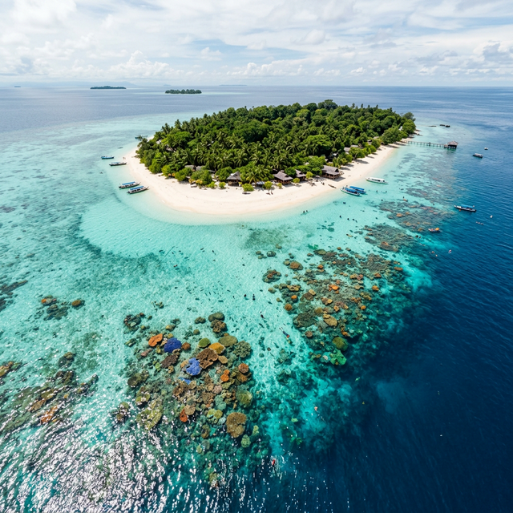

Before you dive into Sipadan's pristine waters, make sure your sun protection isn't contributing to global coral bleaching events. Many common sunscreens contain chemical ingredients that are highly toxic to coral reefs and marine life.
Oxybenzone and octinoxate are the primary culprits. Even in tiny concentrations, these chemicals can cause coral bleaching, damage the DNA of corals, and increase their susceptibility to diseases.
When preparing for your snorkeling or diving trip in Malaysia, opt for mineral-based sunscreens. Look for active ingredients like non-nano zinc oxide or titanium dioxide.
By making a simple switch in your travel gear, you play a direct role in preserving the vibrant underwater ecosystems of the Coral Triangle.